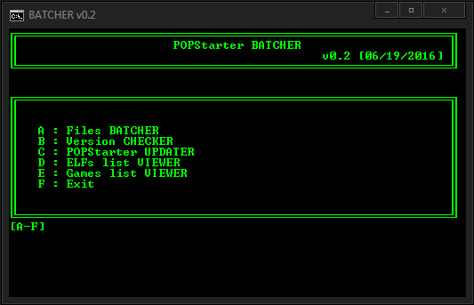

Popstarter batcher
📎 Recovered from the ShaolinAssassin wiki · snapshot 20160706185705
[EXE] POPStarter BATCHER v0.2
CONTENT :
-
BATCHER_v0.2.exe
-
POPSTARTER.BAK (POPSTARTER.ELF with .BAK extension)
DOWNLOAD : here
DESCRIPTION :
- A/ Files BATCHER :
-generates the ##.POPStarter.ELF files (both prefix and file name) using the VCD files name of a directory;
-creates the VMC Game folders;
-lets you copy all the external files (such as TROJANs, PATCHs…) to the VMC game folders.
How to use it ?
- Place BATCHER_0.2.exe into your Toolbox/POPS folder, next to your VCDs;
- Run it;
- Choose POPStarter mode (HDD/USB/SMB)
- A temporary folder named batcher_tmp is created into Toolbox/POPS folder.
If you want to copy external files to VMC game folders, place them into it. A CHEATS.TXT files with generic automated codes (disabled) is included by default. You can delete it if you want.
CHEATS.TXT content :
SAFEMODE
SMOOTH
COMPATIBILITY_0x## (all)
FAKELC
NOPAL
FORCEPAL
CACHE1
USBDELAY_#
-
You are asked if you will use a custom VMC path. A VMCDIR.TXT is generated into batcher_tmp folder. If you choose to use a VMC path, it will be written into it. Otherwise, the VMCDIR.TXT file remains empty.
-
You then get a screen with :
-the mode you choose
-the VMC path you will use (Default/Custom)
-the files detected into batcher_tmp folder
Choose S to start batching process, C to cancel it.
Notes :
-if the VMC game folder already exists into Toolbox/POPS folder, it will not be created,
-if the VMC game folder already exists into Toolbox/POPS folder, the batch process will only add/overwrite files, it cant delete files.
Example :
VMC game folder content :
-VMCs
-a game fixe named PATCH_0.BIN
batcher_tmp content :
-CHEATS.TXT
-VMCDIR.TXT
-an IGR behaviour modifier named PATCH_0.BIN
In this situation :
-the VMC game folder will not be created,
-the VMCs remain intact,
-CHEATS.TXT & VMCDIR.TXT will be added to the VMC game folder,
-PATCH_0.BIN game fixe will be overwritten by the IGR behaviour modifier.
List of supported files for batcher_tmp :
-SLOT0.VMC and SLOT1.VMC - be careful to not overwrite your VMCs if you use this !
-VMCDIR.TXT
-CHEATS.TXT
-PATCH_#.BIN
-TROJAN_#.BIN
-IGR_BG.TM2, IGR_NO.TM2, IGR_YES.TM2
-OSD.BIN
-BIOS.BIN
Any other file will not be copied from batcher_tmp to VMC game folders.
-
B/ Version CHECKER :
-
Lets you know which POPStarter version you are using and detects its status (up-to-date/obsolete/unknown), – If you are using an unknown or obsolete version of POPStarter, it lets you generate – if desired – a message_to_you.txt file with a download link to last POPStarter version.
Rename the ELF you want to check as CHECKVERS.ELF and let the app do the job.
Limit : only scan 1 ELF at once.
-
C/ UPDATER :
-
Useful if/when a new POPStarter version is out. Only deal with ELF files. Grabs the ELF names and generates new updated ELFs.
Place the new version of POPStarter (named as POPSTARTER.ELF or .BAK, doesnt matter) into Toolbox/POPS folder and run the app. Of course, it uses the same mode (HDD/USB/SMB)as before the update.
-
D & E/ Games/ELFs list VIEWER :
-
Lists all your games / ELFs (minus POPSTARTER.ELF if present) and counts them. Useful if you have huge VCD collection. If need, increase the buffer high size of the window so you can see all your games / ELFs.
Back
Images & screenshots
